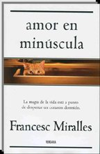

Barselona, Balkan, i knjige
Iako sam najavljivala putopis o Barseloni i Španiji ovog leta, to se nije desilo, pošto španska ambasada nije dala vize. Umesto toga, pisala sam o Krfu. E, sad imamo i alternativu priči o Barseloni, intervju sa piscem Franseskom Miraljesom (Francesc Miralles), koji je iz Barselone i o njoj često piše.
Njegova knjiga "Ljubav malim slovima" objavljena je pre nekog vremena u Srbiji, a ovog proleća autor je boravio u Beogradu, kao gost instituta Servantes. Tom prilikom veći broj novina objavio je intervjue sa njim, uključujući i ove u Danasu, Glasu javnosti i Večernjim novostima.
Ovih dana sam preko maila napravila mali intervju sa Franseskom Miraljesom o Barseloni, Balkanu i knjigama. Intervju je na engleskom, pretpostavljam da većini posetilaca to nije problem.
***
Barcelona had been for two or three days without electricity these days? How did it look like? Was there anything good, interesting or inspiring in that situation?
- It was a big scandal in the city to discover that our electric system was in such a bad condition. Some of the big cables had not been checked since 1950! The situation, although, could be inspiring for a novel, yes...
- You have situated your book «Amor en minúscula» in Barcelona, and also published «Barcelona Blues». Do you find the city particularly inspiring for your writing and it what sense? What do you like about Barcelona most in terms of literature and in terms of living there?
- I use Barcelona as a literary scenario because I know the city very well, since I've passed most of my adolescence in the streets and I still walk around it. But I don't want to center all my novels in Barcelona. Because of this I have started to look for other places. As a city for living, I don't know any better place.
- Your book «Cafè Balcànic», not yet translated unfortunately, is based on your personal experience from the Balkans. Can you tell me something more about that – what have been your strongest and most lasting impressions from the region? Could you draw any parallels with Spanish internal regional differences, identities and cultures?
- This is more a memoire of my youth, something between the travel book and the biography, than a report of general interest about the Balkans. Because of this I don't plan either to republish it in spanish or catalan. What I have known better is Slovenia (specially the Julian Alps) and some places of Croatia. My strongest impressions from the region was being in Zadar during the war, and visiting a camp with thousans of refugees in Split. There are some parallels of what happens with Spain, for instance the cultural differences and how these are exploited by some leaders, but in the Balcans religious differences (all Spain is traditionally catholic) were used too.
- Are you writing anything new now? If so, can you tell us something about that?
- Now I am writing a thriller, second of a series, and afterwards I plan to write a new intimist novel a bit in the line of "amor en minuscula". I will give it to my serbian editor, Tea of Evro-Giunti, even before than to the Spanish publisher. It was a promise I did in Beograd!
- When do you plan to come to Serbia again? Do you have any future plans with publishers or other institutions here?
- I will come back to Serbia when my second novel here is published. It will be a great pleasure to make presentations in bookshops and in institutions like the Cervantes.
***
Ako ovih dana tražite neku od svojih letnjih knjiga, "Ljubav malim slovima" bi mogla biti zanimljiva opcija.
 RSS feed
RSS feed
 sadržaji se objavljuju pod
sadržaji se objavljuju pod
Komentari
i ja zamisljam barselonu kao najbolje mesto za zivot, mediteranska metropola i sve to...
Ljube | 30.07.07 19:19
Barcelona mora biti TAJ grad.
kiko | 31.07.07 08:33
Meni se Lisabon čini kao rešenje :)
etotako | 01.08.07 21:00
Sva prava Barseloni ali svaki grad moze biti TAJ grad, methinks.
Mache s terase | 01.08.07 23:17